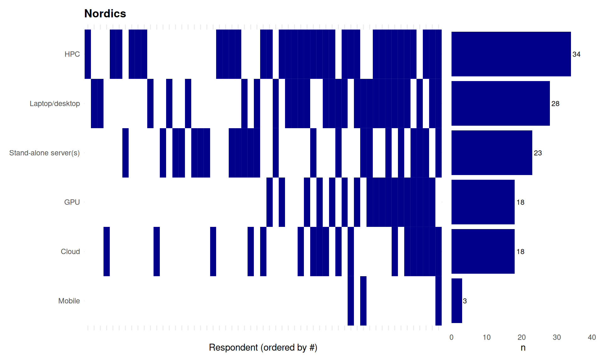
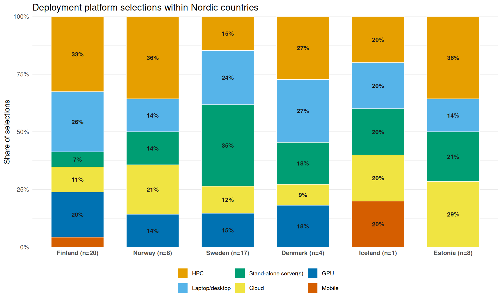
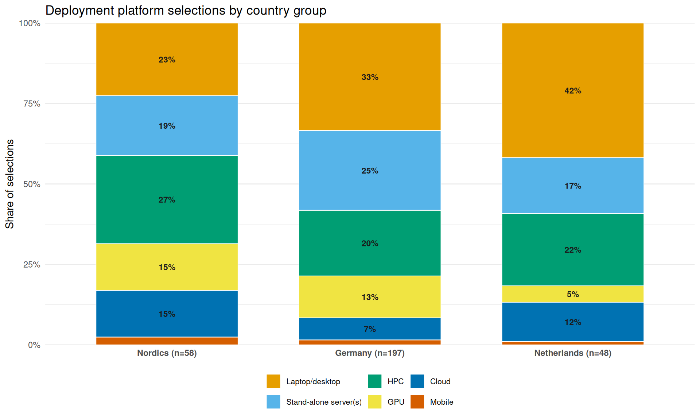

| Deployment platform (Nordics) | ||
| Total respondents: 58 | ||
| Category | Respondents (n) | Percentage (%) |
|---|---|---|
| HPC | 34 | 58.6% |
| Laptop/desktop | 28 | 48.3% |
| Stand-alone server(s) | 23 | 39.7% |
| Cloud | 18 | 31.0% |
| GPU | 18 | 31.0% |
| Mobile | 3 | 5.2% |
58 On which platform(s) is your most recent research software project deployed?
58.1 Nordics
58.1.1 Descriptive Statistics

58.1.2 Free-text responses
| Platforms [Others] | ||
| Response Category | Frequency (n) | Percentage (%) |
|---|---|---|
| Clusters/Grid (on‑prem) | 1 | 20.0% |
| Private/on‑prem cloud | 1 | 20.0% |
| Workstations | 1 | 20.0% |
| but downloaded and used by users. | 1 | 20.0% |
| most are not deployed | 1 | 20.0% |
The raw-to-category allocation table for this question is in Appendix B.
58.1.3 Statistics by age group
| Deployment platform by age group (Nordics) | ||||||||
| Total respondents with age reported: 58. Rows are ranked separately within each age group by respondent count. | ||||||||
Below 35 (n=18)
|
35-45 (n=26)
|
45+ (n=14)
|
||||||
|---|---|---|---|---|---|---|---|---|
| Category | Respondents (n) | Percentage (%) | Category | Respondents (n) | Percentage (%) | Category | Respondents (n) | Percentage (%) |
| HPC | 12 | 66.7% | HPC | 16 | 64.0% | Stand-alone server(s) | 8 | 57.1% |
| Laptop/desktop | 10 | 55.6% | Laptop/desktop | 12 | 48.0% | HPC | 6 | 42.9% |
| GPU | 8 | 44.4% | Cloud | 10 | 40.0% | Laptop/desktop | 6 | 42.9% |
| Stand-alone server(s) | 5 | 27.8% | Stand-alone server(s) | 10 | 40.0% | Cloud | 5 | 35.7% |
| Cloud | 3 | 16.7% | GPU | 5 | 20.0% | GPU | 5 | 35.7% |
| Mobile | 2 | 8.0% | Mobile | 1 | 7.1% | |||
58.2 Within Nordics
| Deployment platform selections within Nordic countries | ||
| Total respondents: 58. Percentages are within each country. | ||
| Category | Respondents (n) | Percentage (%) |
|---|---|---|
| Estonia (n=8) | ||
| HPC | 5 | 62.5% |
| Cloud | 4 | 50.0% |
| Stand-alone server(s) | 3 | 37.5% |
| Laptop/desktop | 2 | 25.0% |
| Iceland (n=1) | ||
| Cloud | 1 | 100.0% |
| HPC | 1 | 100.0% |
| Laptop/desktop | 1 | 100.0% |
| Mobile | 1 | 100.0% |
| Stand-alone server(s) | 1 | 100.0% |
| Denmark (n=4) | ||
| HPC | 3 | 75.0% |
| Laptop/desktop | 3 | 75.0% |
| GPU | 2 | 50.0% |
| Stand-alone server(s) | 2 | 50.0% |
| Cloud | 1 | 25.0% |
| Sweden (n=17) | ||
| Stand-alone server(s) | 12 | 70.6% |
| Laptop/desktop | 8 | 47.1% |
| GPU | 5 | 29.4% |
| HPC | 5 | 29.4% |
| Cloud | 4 | 23.5% |
| Norway (n=8) | ||
| HPC | 5 | 71.4% |
| Cloud | 3 | 42.9% |
| GPU | 2 | 28.6% |
| Laptop/desktop | 2 | 28.6% |
| Stand-alone server(s) | 2 | 28.6% |
| Finland (n=20) | ||
| HPC | 15 | 75.0% |
| Laptop/desktop | 12 | 60.0% |
| GPU | 9 | 45.0% |
| Cloud | 5 | 25.0% |
| Stand-alone server(s) | 3 | 15.0% |
| Mobile | 2 | 10.0% |
Warning: Removed 1 row containing missing values or values outside the scale range
(`geom_text()`).
58.3 Between Countries
Warning: Removed 3 rows containing missing values or values outside the scale range
(`geom_text()`).